Visite al Parco Nazionale Los Glaciares
Come ho scritto prima, la cittá dove sono nato é principalmente turistica. Negli ultimi anni la quantitá di turisti, nazionali e stranieri, é cresciuta. É per questo che ho deciso di creare un grafico che permetta di vedere questo processo.
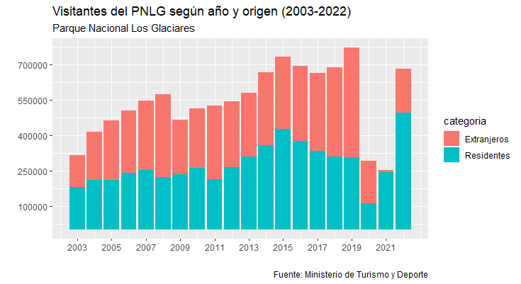
Peró se la quantitá di visitanti cresce constantemente, la destinazione ancora conserva un problema: la stagionalitá delle visite dei turisti. Come si puó vedere nel prossimo grafico, la quantita di visitanti é molto alta in state, ma molto limitata in inverno.
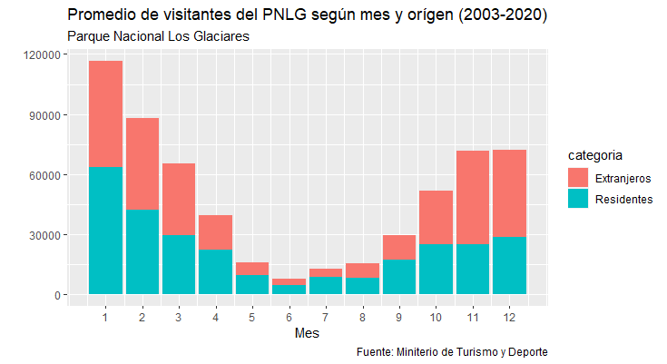
Questo é un problema storico della destinazione, per il quale si stanno pensando diverse soluzioni.
Uso di biciclette pubbliche nella cittá di Buenos Aires (2021)
In un corso di Rstudio, un programma statistico, il compito finale é stato fare un calcolo sull'uso delle biciclette publiche della cittá di Buenos Aires.
La difficoltá era che nel archivo c'erano piú di un millione di righe: una riga per ogni uso di bicicletta per tutto l'anno 2021.
L'idea era sapere che giorno si avevano usato di piú e a che ora. I resultati sono stati quelli che seguono.
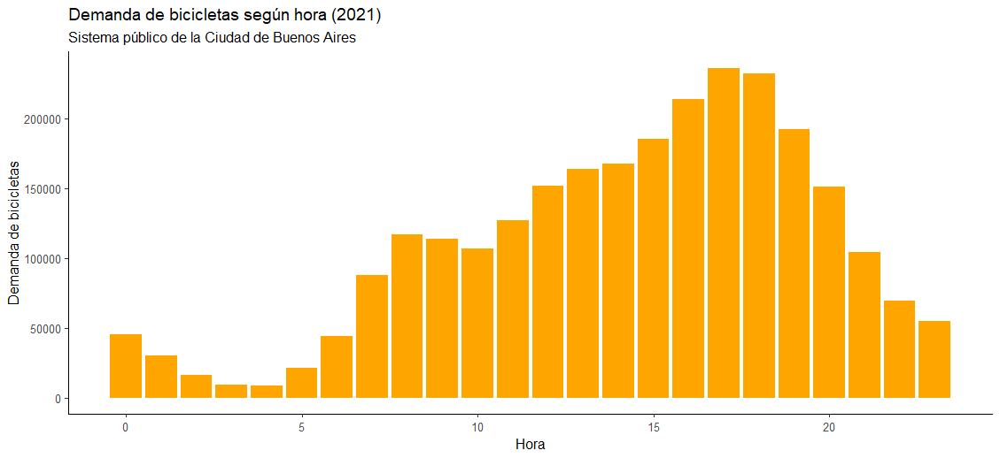
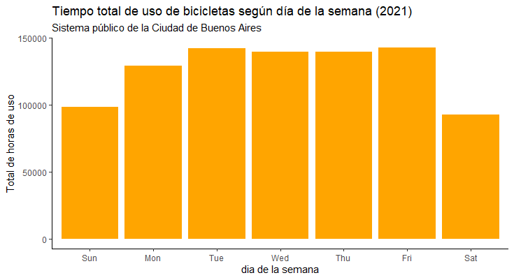
Come si puó vedere nei grafici sopra esposti il uso di biciclette é stato piú frequente il giorno venerdi e l'orario nel quale si é usata di piú é stato il pomeriggio, principalmente fra le 5 e le 6. Nonostante il giorno e l'orario, quando si calcula la media di tempo che si usano le biciclette al giorno, possiamo vedere che le biciclette si usano piú tempo sabato e domenica (25 e 27 minuti respettivamente) che i restanti giorni della settimana (meno di 20 minuti di media).
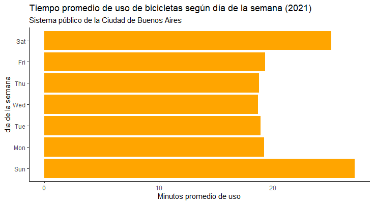
Probablemente questo é vincolato al fatto che le persone che usano le bicicletta dal lunedi al venerdi la usano per andare a lavorare, mentre il fine di settimana le usano per attivitá ricreative.
Reati in Argentina
Cercando archivi per lavorare e immparare l'uso dei programmi ho trovato un archivio csv relativo alle delitti successi in Argenitna negli ultimi anni.
L'archivio era molto interessante perche aveva informazione relativa alle 24 provincie e tutti tipi di delitti e reati. Per quello ho deciso di fare una ricerca sull'evoluzione quantitativa di questi delitti.
Una cosa che mi ha chiamato l'attenzione è la crescita nell'numero di reati sessuali negli ultimi anni. Per permettere di vedere la comparazione di tutto il paese ho riagruppato le provincie in regioni.
Come si puó notare questo tipo di delitto e cresciuto in tutte le regioni.
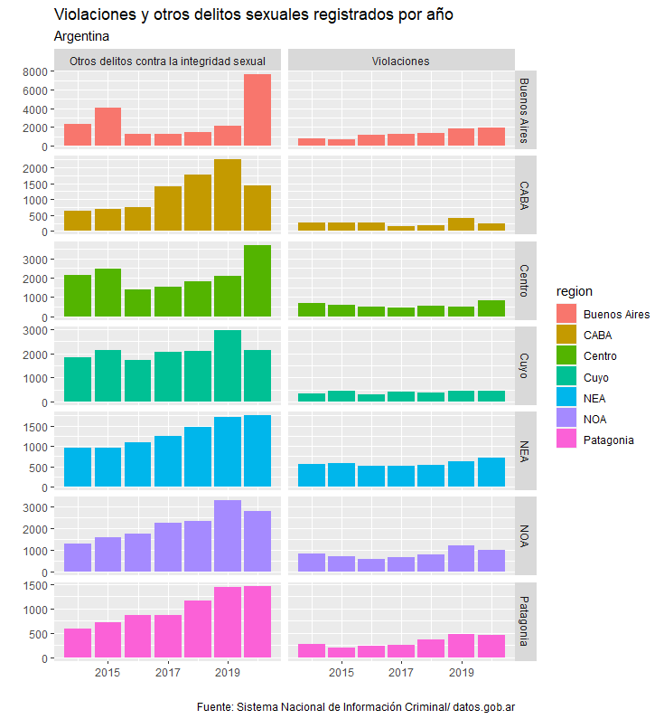
Si possono notare anche altri dati interessanti, ad esempio il numero di suicidi o di incidenti stradali per regione.
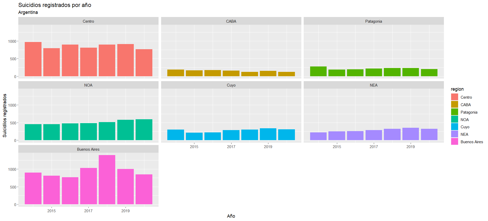
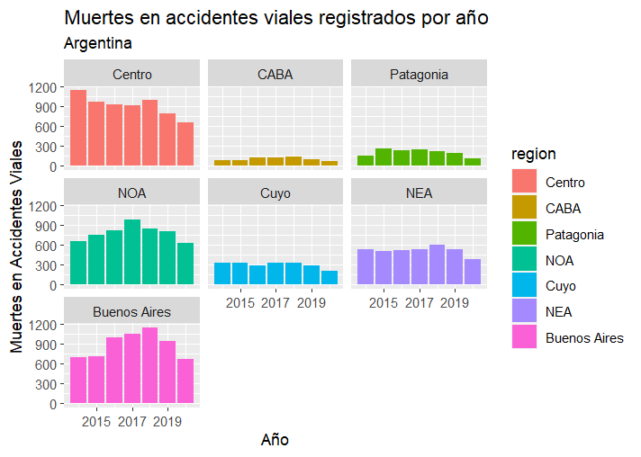
Mappe: poverta e mineria
Anche nell'ambito della Universita di Buenos Aires ho fatto un corso di QGIS, un programma che permette di creare mappe in funzione dell'informazione geografica che si vuole osservare.
Per il lavoro finale ho deciso di fare una mappa sulla distribuzione geografica della povertà nella cittá di Buenos Aires combinato con la distribuzione dei "Quartieri Popolari", quelli dove la precarietá nell'ambito del lavoro e la vita e piú difusa.
Ho usato dati censali del anno 2010 e dati publici del Registro Nazionale di Quartieri Popolari (ReNaBap).
L'obietivo della ricerca era vedere dove si concentrasse specialmente la maggiore percentuale di poverta nella cittá e se fosse imparentato spazialmente con questi quartieri.
Come si puo vedere, la povertá tende a concentrarsi nella zona sud est della cittá, in generale in torno a questi quartieri.
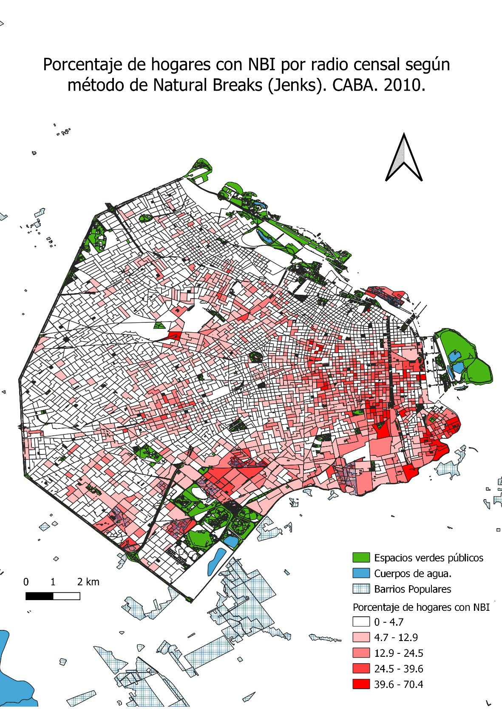
Un'altra mappa che ho creato riferisce alla mineria nell'Argentina.
Permette vedere la distribuzione delle miniere in base al prodotto predominante.
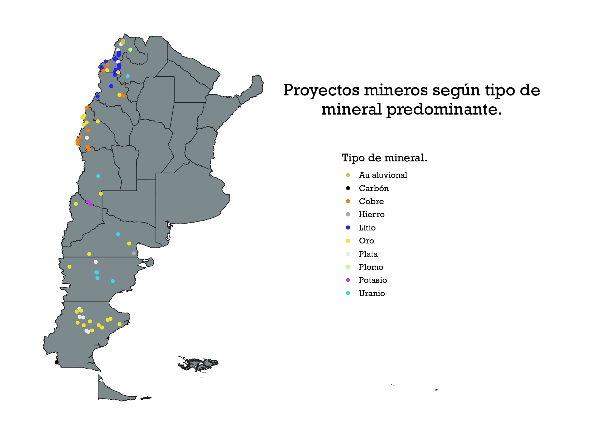
Mercato di lavoro in Santa Cruz
Uno di miei primi progetti come ricercatore nell'ambito delle scienze sociali é stata la ricerca sull'evoluzione recente del mercato di lavoro nella mia provincia, Santa Cruz.
Questi grafici sono una parte di una ricerca piú ampia relativa alla economia provinciale (produzione, esportazioni, crescita demografica, eccetera) che sta arrivando alla sua conclusione.
I grafici sono state fatte con Excel e la informazione è stata presa dell Sistema di previsione argentino. Lí si puó apprezzare la crescita nella quantitá di posti di lavoro e in che settori é successa quella crescita.
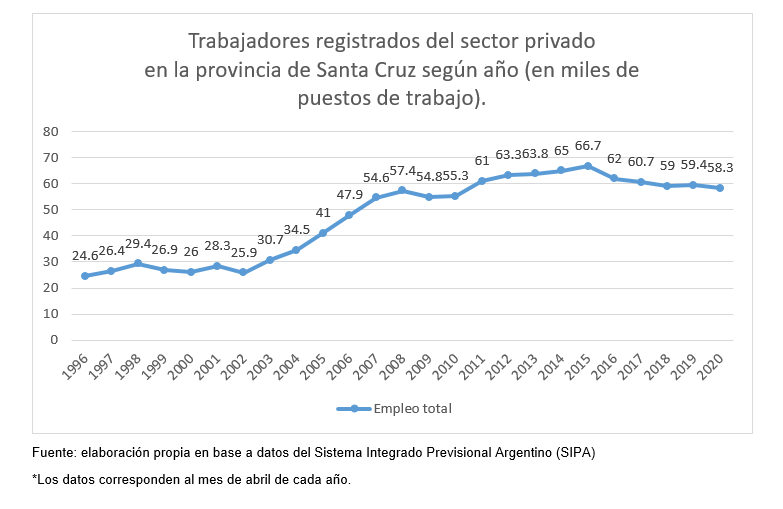

Se vuoi vedere piu ricerche da me svolte puoi entrare nell'mio profilo di Tableau .